Kapitel 10 Regression och korrelation
Regression och korrelation är metoder för att mäta ett samband mellan två kontinuerliga variabler. Regression skattar en variabel som en funktion av en annan, t.ex. kan man skatta en modell av en plantas höjd som en funktion av näringsinnehåll i marken. Korrelation är ett mått på samvariation mellan två variabler.
10.1 Regression
I en regression modelleras en variabel som en funktion av en annan variabel. Vid enkel linjär regression finns en sådan förklarande variabel och förhållandet mellan variablerna antas vara linjärt. Modellen kan uttryckas
\[y_{i} = \beta_0 + \beta_1 x_i + \varepsilon_i,\]
där \(y_i\) är observation \(i\) av den förklarade variabeln, \(\beta_0\) och \(\beta_1\) är parametrar, \(x_i\) är observation \(i\) av den förklarande variabeln, och \(\varepsilon_i\) är en slumpmässig felterm.
Ta som exempel data på förväntad medellivslängd och bnp per capita. Datan hämtas från gapminder-paketet. Paketet ggrepel kan användas för att sätta punktetiketter som inte överlappar. För enklare tolkning av modellen transformeras bnp per capita till att vara i tusen dollar, snarare än dollar.
library(gapminder)
dat <- gapminder %>%
filter(year == 2007, continent == "Europe") %>%
mutate(gdpPercap = gdpPercap / 1000)
library(ggrepel)
ggplot(dat, aes(gdpPercap, lifeExp)) +
geom_point() +
geom_text_repel(aes(label = country), size = 3)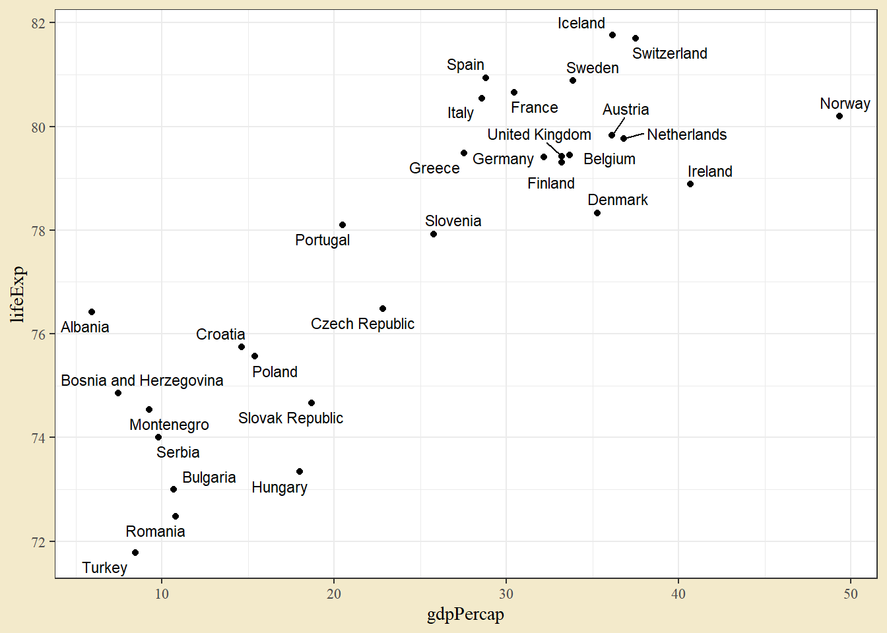
Datan visar ett positivt samband mellan variablerna - högre bnp per capita är kopplat till högre medelllivslängd. En regressionmodell kan i R skattas med lm-funktionen. Syntaxen är väldigt lik den för anovamodellen, men istället för en faktor som förklarande variabel används nu en kontinuerlig variabel.
mod <- lm(lifeExp ~ gdpPercap, data = dat)
summary(mod)##
## Call:
## lm(formula = lifeExp ~ gdpPercap, data = dat)
##
## Residuals:
## Min 1Q Median 3Q Max
## -2.79839 -1.30472 0.00807 1.33443 2.87766
##
## Coefficients:
## Estimate Std. Error t value Pr(>|t|)
## (Intercept) 72.27106 0.69416 104.113 < 2e-16 ***
## gdpPercap 0.21463 0.02514 8.537 2.8e-09 ***
## ---
## Signif. codes: 0 '***' 0.001 '**' 0.01 '*' 0.05 '.' 0.1 ' ' 1
##
## Residual standard error: 1.598 on 28 degrees of freedom
## Multiple R-squared: 0.7225, Adjusted R-squared: 0.7125
## F-statistic: 72.88 on 1 and 28 DF, p-value: 2.795e-09Funktionen summary ger en sammanfattning av modellen. Skattningen av parametern \(\beta_0\) ges som raden (Intercept) och dess tolkning är som förväntat värde i medellivslängd om bnp per capita är noll. Det är ofta lutningsparametern som är mer intressant. Skattningen av \(\beta_1\) ges på den rad som har samma namn som den förklarande variabeln, här gdpPercap. Den skattade parametern är \(0.2146\). Lutningsparametern har den generella tolkning som ökningen i y-variabeln när x-variabeln ökar med 1. I det här fallet ger \(0.2146\) att ett lands medellivslängd ökar med ungefär 78 dagar när bnp per capita ökar med 1000 dollar.
Man kan rita ut regressionlinjen i en graf med geom_smooth och argumentet method satt till "lm".
ggplot(dat, aes(gdpPercap, lifeExp)) +
geom_point() +
geom_smooth(method = lm)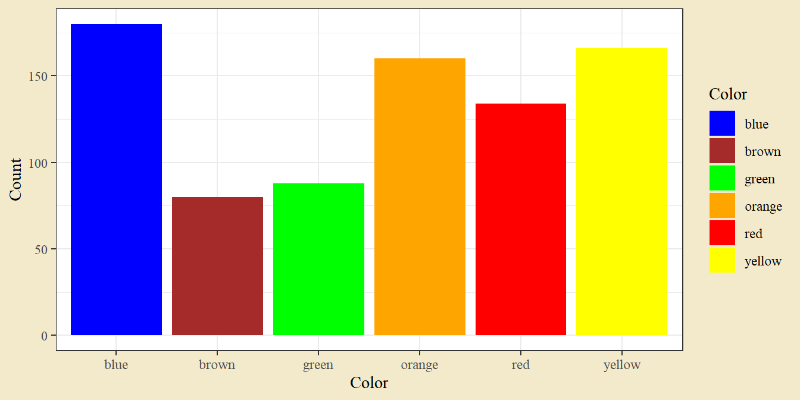
Den blå linjen illustrerar regressionlinjen \(72.27 + 0.2146 \cdot x\). Det grå bandet kring linjen är ett konfidensintervall för skattningen av y-variabeln vid ett visst x-värde.
Utskriften från summary ger också tester av parametrarna (den högra kolumnen Pr(>|t|) ger p-värdet för ett test där nollhypotesen är att populationsparametern är noll). I det här fallet är både intercept och lutning skilda från noll. Motsvarande F-test för lutningen kan tas fram med en anova-tabell.
library(car)
Anova(mod)## Anova Table (Type II tests)
##
## Response: lifeExp
## Sum Sq Df F value Pr(>F)
## gdpPercap 186.031 1 72.883 2.795e-09 ***
## Residuals 71.469 28
## ---
## Signif. codes: 0 '***' 0.001 '**' 0.01 '*' 0.05 '.' 0.1 ' ' 1Testerna av en regressionmodell bygger på ett normalfördelningsantagande oh ett antagande om homoskedasticitet (lika varians i y oavsett position på x-axeln). Antagandena kan undersökas genom att titta på skattningens residualer - skillnaden mellan det faktiska y-värdet och modellens värde. Residualerna kan undersökas med ett histogram eller en QQ-plot. En annan vanlig diagnosplot är ett spridningsdiagram med skattade värden på x-axeln och residualerna på y-axeln.
hist(residuals(mod), breaks = 10)
qqnorm(residuals(mod)); qqline(residuals(mod))
plot(residuals(mod) ~ fitted(mod))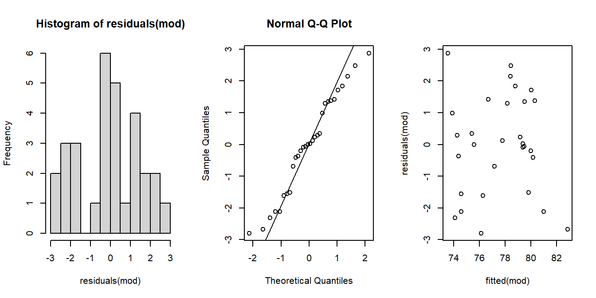
Om data följer en normalfördelning bör histogrammet visa en ungefärlig normalkurva, QQ-plotten bör visa punkter på den diagonala linjen och spridningsdiagrammet bör visa en slumpmässig spridning av punkter. Graferna pekar i det här fallet inte på några tydliga avvikelser från normalfördelningsantagandet, möjligen pekar QQ-plotten på mindre spridning i svansarna än en teoretisk normalfördelning.
10.2 Korrelation
Korrelation ger ett mått mellan \(-1\) och \(1\) på hur väl två variabler samvarierar. En korrelation över noll tyder på ett positivt samband mellan variablerna - en observation med ett högt värde i den ena variabeln har också ett högt värde på den andra - medan en korrelation under noll tyder på ett negativt samband. I R kan korrelation beräknas med cor och två variabler som första och andra argument. Funktionen cor.test ger ett test där nollhypotesen är att korrelationen är noll.
cor(dat$lifeExp, dat$gdpPercap)## [1] 0.8499711cor.test(dat$lifeExp, dat$gdpPercap)##
## Pearson's product-moment correlation
##
## data: dat$lifeExp and dat$gdpPercap
## t = 8.5372, df = 28, p-value = 2.795e-09
## alternative hypothesis: true correlation is not equal to 0
## 95 percent confidence interval:
## 0.7058444 0.9265221
## sample estimates:
## cor
## 0.8499711Medellivslängd och bnp per capita har en stark positiv korrelation på \(0.85\) och den korrelation är signifikant skild från noll (\(p = 2.795 \cdot 10^{-9}\)). Notera att p-värdet är detsamma som testet av lutningsparametern i regressionen.
10.3 Övningar
Övning 10.1 (Blodtryck) Följande fascinerande blodtrycksdata hämtas från kvinnor i Sala.
| Ålder | Blodtryck |
|---|---|
| 32 | 115 |
| 35 | 112 |
| 47 | 120 |
| 50 | 136 |
| 55 | 144 |
| 60 | 160 |
| 62 | 144 |
| 64 | 156 |
| 70 | 169 |
| 75 | 164 |
a. Skatta en enkel linjär regressionsmodell och tolka lutningskoefficienten i termer av de ursprungliga variablerna.
b. Beräkna ett konfidensintervall för lutningskoefficienten.
c. Undersök modellens antaganden (normalfördelade residualer, lika varians för skilda nivåer av x-variabeln).
d. Testa om lutningskoefficienten är skild från 1.
Lösningsförslag 10.1 (Blodtryck) Data kan läsas in från excelfilen med uppgiftsdata. Två kontinuerliga variabler kan enklast illustreras med ett spridningsdiagram.
dat <- read_excel("Data/Uppgiftsdata.xlsx", sheet = "Blodtryck")
ggplot(dat, aes(Ålder, Blodtryck)) +
geom_point() +
geom_smooth(method = lm)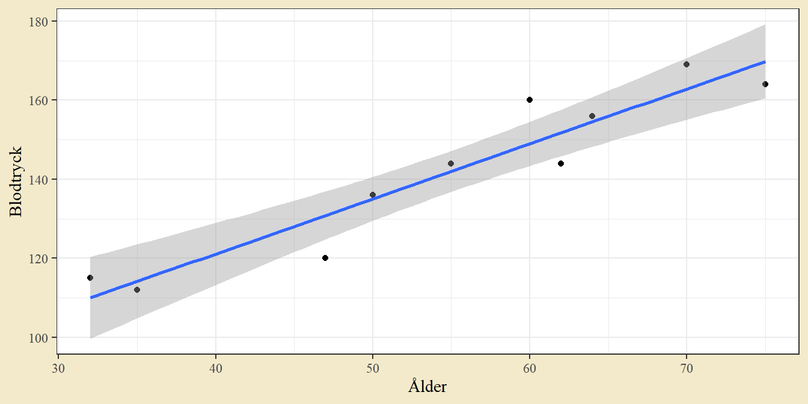
Det finns ett tydligt positivt samband mellan variablerna.
mod <- lm(Blodtryck ~ Ålder, dat)
summary(mod)##
## Call:
## lm(formula = Blodtryck ~ Ålder, data = dat)
##
## Residuals:
## Min 1Q Median 3Q Max
## -10.868 -4.915 1.217 4.254 11.042
##
## Coefficients:
## Estimate Std. Error t value Pr(>|t|)
## (Intercept) 65.4650 9.5384 6.863 0.000129 ***
## Ålder 1.3915 0.1685 8.259 3.47e-05 ***
## ---
## Signif. codes: 0 '***' 0.001 '**' 0.01 '*' 0.05 '.' 0.1 ' ' 1
##
## Residual standard error: 7.145 on 8 degrees of freedom
## Multiple R-squared: 0.895, Adjusted R-squared: 0.8819
## F-statistic: 68.21 on 1 and 8 DF, p-value: 3.47e-05Regressionslinjen ges av \(y = 65.465 + 1.3915\).
a. Blodtrycket ökar med \(1.39\) för varje ökat år.
b. Ett konfidensintervall kan tas fram med confint.
confint(mod)## 2.5 % 97.5 %
## (Intercept) 43.469261 87.460661
## Ålder 1.003005 1.780088Ett 95-procentigt konfidensintervall för lutning ges av \((1.003, 1.780)\).
c. Modellen bygger på normalfördelade residualer och lika varians för skilda nivåer av ålder.
plot(residuals(mod) ~ fitted(mod))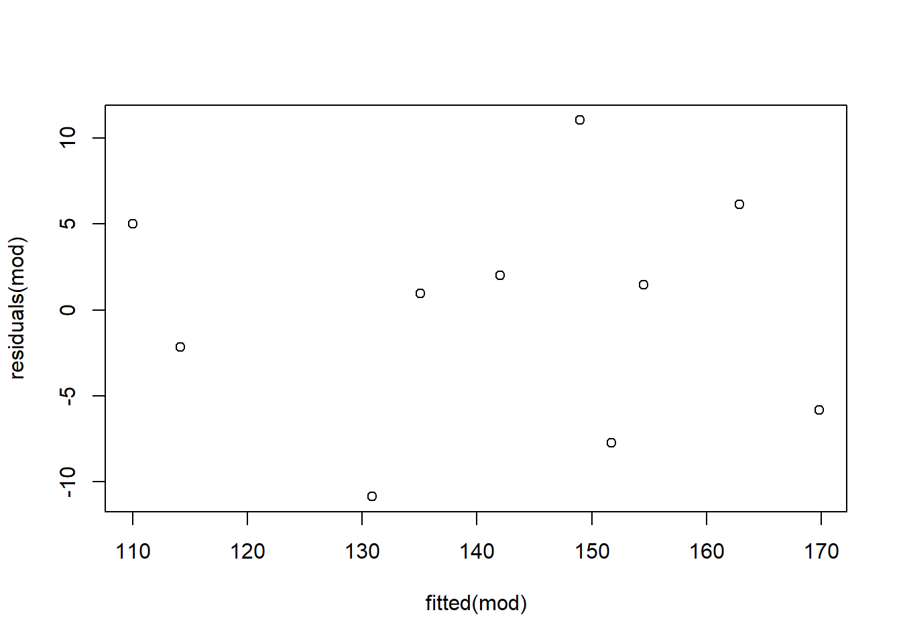
Det finns inga extremvärden bland residualer och inga tydliga tecken på skillnader i varians.
d. Eftersom 1 ligger precis utanför ett 95-procentigt konfidensintervall, bör ett test på femprocentsnivån leda till att man förkastar nollhypotesen att lutningen är 1. Detta kan testas formellt genom emtrends från paketet emmeans.
test(emtrends(mod, ~ 1, "Ålder"), null = 1)## 1 Ålder.trend SE df null t.ratio p.value
## overall 1.39 0.168 8 1 2.324 0.0486P-värdet ligger precis under fem procent.
Övning 10.2 (Metodjämförelse) Någon vill jämföra två metoder för att mäta volym på någon planta. Hen mäter därför nio olika plantor med bägge metoderna, vilket ger följande värden.
| Metod | 1 | 2 | 3 | 4 | 5 | 6 | 7 | 8 | 9 |
|---|---|---|---|---|---|---|---|---|---|
| A | 701 | 707 | 768 | 714 | 712 | 684 | 716 | 751 | 674 |
| B | 935 | 989 | 924 | 904 | 924 | 975 | 889 | 948 | 904 |
a. Illustrera datan med en lämplig figur. Testa med ett lämpligt test om metoderna ger samma medelvärdesvolym.
b. Beräkna korrelationen mellan metoderna. Metod A är en dyrare men bättre metod. Ger mätning med metod B en säker uppskattning av utfallet med metod A?
Lösningsförslag 10.2 (Metodjämförelse) Data kan hämtas från excelfilen med uppgiftsdata. Ett diagram visar en tydlig skillnad mellan grupperna.
dat <- read_excel("Data/Uppgiftsdata.xlsx", sheet = "Metodjämförelse")
ggplot(dat, aes(Metod, Volym, group = Yta)) +
geom_point() +
geom_line()
a. Ibland behöver man inget test.
Men en jämförelse mellan två grupper kan förstås tas som ett parat t-test. Man kan först använda pivot_wider för att skriva om data till kolumnform.
dat_wide <- dat %>%
pivot_wider(names_from = Metod, values_from = Volym)
t.test(dat_wide$A, dat_wide$B, paired = T)##
## Paired t-test
##
## data: dat_wide$A and dat_wide$B
## t = -14.228, df = 8, p-value = 5.8e-07
## alternative hypothesis: true mean difference is not equal to 0
## 95 percent confidence interval:
## -253.7192 -182.9475
## sample estimates:
## mean difference
## -218.3333Parad data kan också ses som det enklaste exemplet på ett block, och analyseras som en anova med block. För att R ska tolka variabeln Yta som en faktor kan man ändra dess typ med as.character.
dat <- dat %>% mutate(Yta = as.character(Yta))
mod <- lm(Volym ~ Metod + Yta, dat)
Anova(mod)## Anova Table (Type II tests)
##
## Response: Volym
## Sum Sq Df F value Pr(>F)
## Metod 214512 1 202.4419 5.8e-07 ***
## Yta 7440 8 0.8777 0.5709
## Residuals 8477 8
## ---
## Signif. codes: 0 '***' 0.001 '**' 0.01 '*' 0.05 '.' 0.1 ' ' 1P-värdet från ett F-test på metod är detsamma som det från det parade t-testet.
b.
ggplot(dat_wide, aes(B, A)) +
geom_point()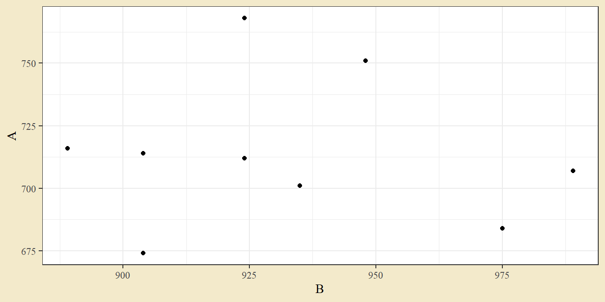
cor.test(dat_wide$A, dat_wide$B)##
## Pearson's product-moment correlation
##
## data: dat_wide$A and dat_wide$B
## t = -0.17396, df = 7, p-value = 0.8668
## alternative hypothesis: true correlation is not equal to 0
## 95 percent confidence interval:
## -0.6992626 0.6257789
## sample estimates:
## cor
## -0.06560983Det finns inget signifikant samband mellan metoderna. Mätning med metod B säger alltså inget om utfallet i metod A. Om metod A är den mer precisa metoden, tyder detta på att metod B inte bör användas.
Övning 10.3 (Anscombes data) Den raka regressionslinjen eller det enkla korrelationsmåttet säger lite om hur data egentligen ser ut. En vanlig illustration av detta är Anscombes kvartett, fyra exempel konstruerade av den brittiske statistikern Francis Anscombe 1973. Datan finns tillgänglig i R som datasetet anscombe. Plotta de fyra graferna (x1 paras med y1 och så vidare) i spridningsdiagram och beräkna korrelation för varje par. Kommentera utfallet.
Lösningsförslag 10.3 (Anscombes data) Data finns tillgänglig i R som anscombe, vilket är en tabell med åtta kolumner som består av fyra par (där x1 är kopplad till y1 och så vidare). Paren kan plottas med enkla spridningsdiagram.
g1 <- ggplot(anscombe, aes(x1, y1)) + geom_point()
g2 <- ggplot(anscombe, aes(x2, y2)) + geom_point()
g3 <- ggplot(anscombe, aes(x3, y3)) + geom_point()
g4 <- ggplot(anscombe, aes(x4, y4)) + geom_point()
library(patchwork)
(g1 + g2) / (g3 + g4)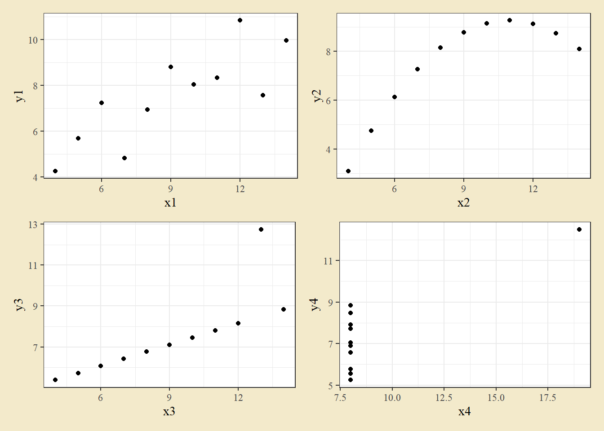
Graferna ser olika ut.
cor(anscombe$x1, anscombe$y1)## [1] 0.8164205cor(anscombe$x2, anscombe$y2)## [1] 0.8162365cor(anscombe$x3, anscombe$y3)## [1] 0.8162867cor(anscombe$x4, anscombe$y4)## [1] 0.8165214Men har samma korrelation (till fjärde decimal).
En modern utveckling av Anscombes kvartett ges av The Datasaurus Dozen.
Övning 10.4 (Beach 2050) Bland kursdata finns en fil med uppmätta temperaturer vid väderstationen i Falsterbo. Den kan läsas in från csv-filen. Se tidigare uppgift om beskrivande statistik för detaljer.
dat <- read_csv2("Data/smhi-opendata_1_52230_20210912_114534.csv", skip = 9) %>%
mutate(Lufttemperatur = as.numeric(Lufttemperatur))En sammanställning av medeltemperaturer de senaste fyrtio åren ges av följande tabell.
| År | Medeltemperatur |
|---|---|
| 1981 | 7.92 |
| 1982 | 8.53 |
| 1983 | 9.03 |
| 1984 | 8.38 |
| 1985 | 6.61 |
| 1986 | 7.20 |
| 1987 | 6.60 |
| 1988 | 8.76 |
| 1989 | 9.76 |
| 1990 | 9.91 |
| 1991 | 8.61 |
| 1992 | 9.55 |
| 1993 | 8.12 |
| 1994 | 9.26 |
| 1995 | 9.00 |
| 1996 | 7.32 |
| 1997 | 8.99 |
| 1998 | 8.58 |
| 1999 | 9.29 |
| 2000 | 9.72 |
| 2001 | 8.98 |
| 2002 | 9.51 |
| 2003 | 8.89 |
| 2004 | 8.92 |
| 2005 | 9.01 |
| 2006 | 9.63 |
| 2007 | 9.80 |
| 2008 | 9.81 |
| 2009 | 9.17 |
| 2010 | 7.79 |
| 2011 | 9.37 |
| 2012 | 9.20 |
| 2013 | 10.08 |
| 2014 | 11.53 |
| 2015 | 10.73 |
| 2016 | 10.58 |
| 2017 | 10.24 |
| 2018 | 11.42 |
| 2019 | 11.36 |
| 2020 | 11.44 |
a. Skapa en passande graf med år på x-axeln och medeltemperatur på y-axeln. I ggplot kan en skattad regressionlinje illustreras genom geom_smooth(method = lm).
b. Skatta en regressionsmodell med år som förklarande variabel och medeltemperatur som förklarad variabel. Genomför ett t-test eller F-test för att se om lutningskoefficienten är skild från noll.
c. Funktionen predict kan användas för att skapa en skattning av populationsmedelvärdet för valfritt värde på den förklarande variabeln. Titta på hjälpsidan för predict.lm och använd funktionen för att förutsäga medeltemperatur för varje år fram till 2050. Illustrera skattningarna i en passande graf.
d. Vilken kritik finns mot den här modellen?
Lösningsförslag 10.4 (Beach 2050) Data läses in med koden i uppgiften.
dat <- read_csv2("Data/smhi-opendata_1_52230_20210912_114534.csv", skip = 9) %>%
mutate(Lufttemperatur = as.numeric(Lufttemperatur))Årsmedelvärden kan beräknas genom att skapa en variabel för År med year från paketet lubridate. Därefter grupperas efter år och summeras med medelvärdet. Slutligen filteras datan för att ta fram de senaste 40 åren. Datan sparas under namnet dat_medel.
dat_medel <- dat %>%
mutate(År = lubridate::year(Datum)) %>%
group_by(År) %>%
summarise(Medeltemperatur = mean(Lufttemperatur)) %>%
filter(År > 1980, År < 2021)a. Tidsdata illustreras ofta med en linjediagram. Regressionslinjen kan skapas med geom_smooth(method = lm).
g1 <- ggplot(dat_medel, aes(År, Medeltemperatur)) +
geom_line() +
geom_point() +
geom_smooth(method = lm)
g1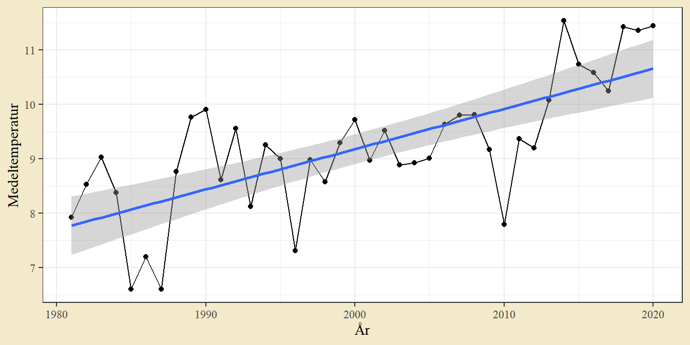
Det finns tecken på en ökning över tid.
b. Regressionmodellen skattas med funktionen lm. Medeltemperatur är den förklarade variabeln och år den förklarande - regressionsformeln skrivs därmed Medeltemperatur ~ År. Modellen har automatiskt ett intercept, men man hade även kunnat skriva Medeltemperatur ~ 1 + År för tydlighet. Resultatet skrivs ut med summary.
mod <- lm(Medeltemperatur ~ År, dat_medel)
summary(mod)##
## Call:
## lm(formula = Medeltemperatur ~ År, data = dat_medel)
##
## Residuals:
## Min 1Q Median 3Q Max
## -2.1256 -0.5387 0.1005 0.5267 1.4678
##
## Coefficients:
## Estimate Std. Error t value Pr(>|t|)
## (Intercept) -138.63357 23.31584 -5.946 6.75e-07 ***
## År 0.07391 0.01165 6.341 1.94e-07 ***
## ---
## Signif. codes: 0 '***' 0.001 '**' 0.01 '*' 0.05 '.' 0.1 ' ' 1
##
## Residual standard error: 0.8509 on 38 degrees of freedom
## Multiple R-squared: 0.5141, Adjusted R-squared: 0.5014
## F-statistic: 40.21 on 1 and 38 DF, p-value: 1.939e-07Linjen har ett intercept på \(-138.63\) och en lutning på \(0.074\). Standardtolkningar är att det var \(-138\) grader år noll (hmmmm) och att medeltemperaturen ökar med \(0.07\) grader per år.
Testet för lutningen (ett t-test) ges på raden för År. Nollhypotesen är att lutningskoefficienten är 0 och det låga p-värdet tyder på att den nollhypotesen bör förkastas. Det finns en statistiskt säkerställd ökning i medeltemperatur över tid.
Diagnosgrafer ger inga uppenbara avvikelser från normalfördelning eller struktur i spridningen.
qqnorm(residuals(mod))
qqline(residuals(mod))
plot(fitted(mod), residuals(mod))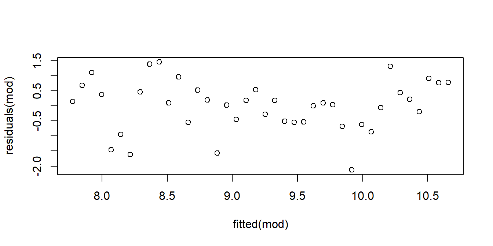
c. Det är möjligt att prognosticera värden med predict. Funktionen tar en skattad modell (här mod) och en ny datatabellen, som innehåller en kolumn med samma namn som den förklarande variabeln i modellen (här År). Funktionen kan även producera konfidensintervall för skattningen, här genom interval = "conf" för ett konfidensintervall.
dat_predict <- predict(mod, newdata = tibble(År = 2020:2050), interval = "conf") %>%
as_tibble() %>% # Ändra till en tibble för enklare hantering
mutate(År = 2020:2050) # Lägg till år för senare graf
g1 + # Samma grundgraf som tidigare
geom_line(aes(År, fit), data = dat_predict) + # Lägger till en linje för skattningar för kommande år
geom_ribbon(aes(År, ymin = lwr, ymax = upr), # Lägger till ett band för konfidensintervallet för skattningen
inherit.aes = F, data = dat_predict,
alpha = 0.2, fill = "red") # alpha sätter genomskinlighet för en yta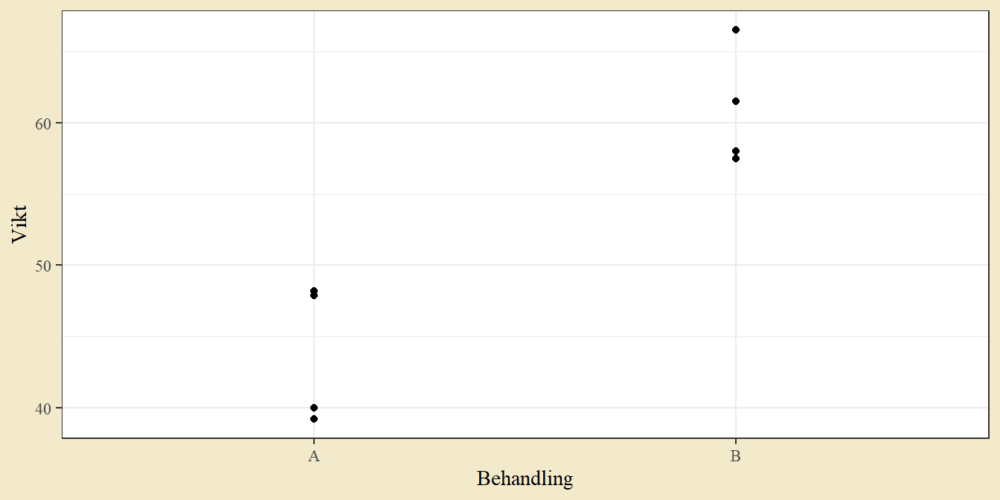
d. I en tidigare uppgift påpekas att data inte samlats in samma tider på dygnet under hela mätperioden - det är därmed möjligt att den observerade ökningen beror på förändringar i mätmetod. Valet av de fyrtio senaste åren var ett godtyckligt val som påverkar lutningen kraftigt (till exempel om man av en ren slump börjar med några kalla år och avslutar med några varma). Regressionsmodellen är en linjär modell, vilket ger den uppenbarligen orimliga tolkning av interceptet som en temperatur år 0.
Slutligen finns förstås det grundläggande problemet med prognoser: det kan ske oväntade saker som leder till strukturbrott och gör att sambandet mellan förklarande och förklarad variabel förändras.
Övning 10.5 (Datasaurus Dozen) Datasaurus-datan är en konstruerad datamängd som illustrerar hur skilda mönster i data kan ge samma punktskattningar (medelvärden, standardavvikelser och korrelationer). Datan finns tillgänglig som en del av TidyTuesday-projektet och kan hämtas med följande rad.
dat <- readr::read_csv('https://raw.githubusercontent.com/rfordatascience/tidytuesday/master/data/2020/2020-10-13/datasaurus.csv')a. Datan innehåller en gruppering (dataset) och x- och y-koordinater. För varje grupp i kolumnen dataset, beräkna medelvärde och standardavvikelse för x och y, och beräkna korrelationen mellan x och y. Kommentera utfallet.
b. Illustrera materialet med en lämplig graf, t.ex. ett spridningsdiagram mellan x och y för varje grupp i kolumnen dataset.
Lösningsförslag 10.5 (Datasaurus Dozen) a. Punkskattningar kan beräknas genom att gruppera enligt dataset och summera med lämpliga funktioner (mean, sd och cor).
dat %>%
group_by(dataset) %>%
summarise(mean(x), mean(y), sd(x), sd(y), cor(x,y))## # A tibble: 13 × 6
## dataset `mean(x)` `mean(y)` `sd(x)` `sd(y)` `cor(x, y)`
## <chr> <dbl> <dbl> <dbl> <dbl> <dbl>
## 1 away 54.3 47.8 16.8 26.9 -0.0641
## 2 bullseye 54.3 47.8 16.8 26.9 -0.0686
## 3 circle 54.3 47.8 16.8 26.9 -0.0683
## 4 dino 54.3 47.8 16.8 26.9 -0.0645
## 5 dots 54.3 47.8 16.8 26.9 -0.0603
## 6 h_lines 54.3 47.8 16.8 26.9 -0.0617
## 7 high_lines 54.3 47.8 16.8 26.9 -0.0685
## 8 slant_down 54.3 47.8 16.8 26.9 -0.0690
## 9 slant_up 54.3 47.8 16.8 26.9 -0.0686
## 10 star 54.3 47.8 16.8 26.9 -0.0630
## 11 v_lines 54.3 47.8 16.8 26.9 -0.0694
## 12 wide_lines 54.3 47.8 16.8 26.9 -0.0666
## 13 x_shape 54.3 47.8 16.8 26.9 -0.0656Grupperna har samma medelvärde och standardavvikelser i x och y. Korrelationerna mellan x och y är mycket lika.
b. Datan kan illustreras med ett spridningsdiagram. Funktionen facet_wrap kan användas för separata fönster för skilda grupper.
ggplot(dat, aes(x, y)) +
geom_point() +
facet_wrap(~ dataset)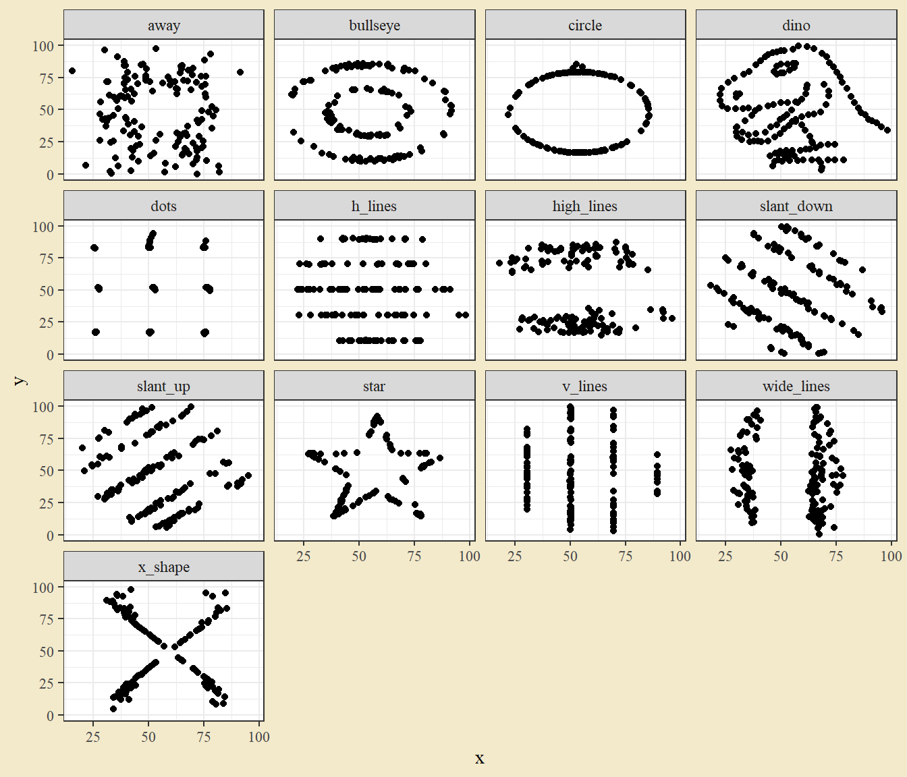
Figuren visar att det finns tydliga mönster i flera av grupperna och tydliga skillnader mellan dem.